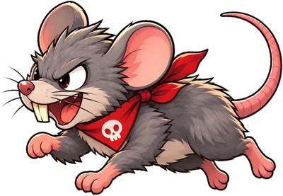

점수 0
-
-
🛡 5
5
!

🌙 무한질주 모드
🐕 크림이 산책순위표 별도
🏆 명예의 전당
🌙 무한질주
불러오는 중...
끝이 없습니다. 왕도 없습니다. 얼마나 버티나 겨뤄보세요.
AI로 제작되었으며, 비영리로 운영됩니다.
크림아! 발 닦자!
이번 점수0
🏆 TOP 10
불러오는 중...
🎉 TOP 10 진입! 이름을 남겨보세요.
스페이스바 또는 아래 점프 버튼! 두 번 누르면 2단 점프
AI로 제작되었으며, 비영리로 운영됩니다.